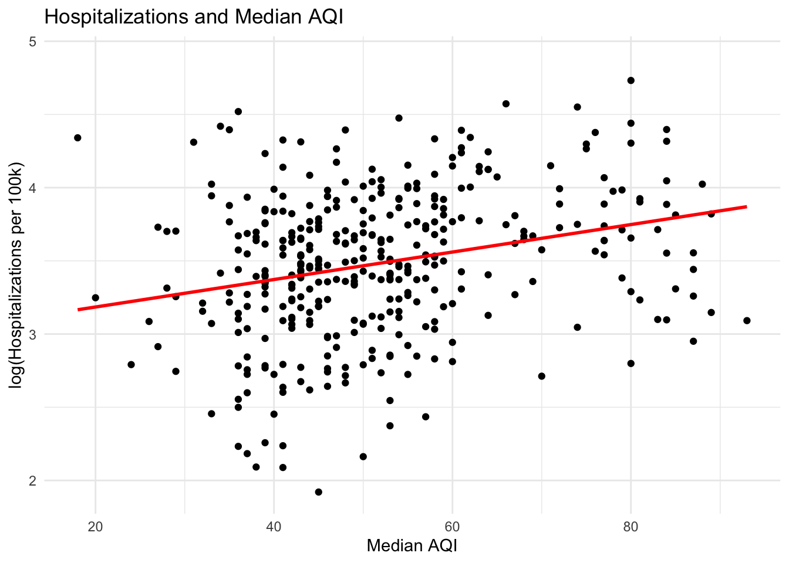
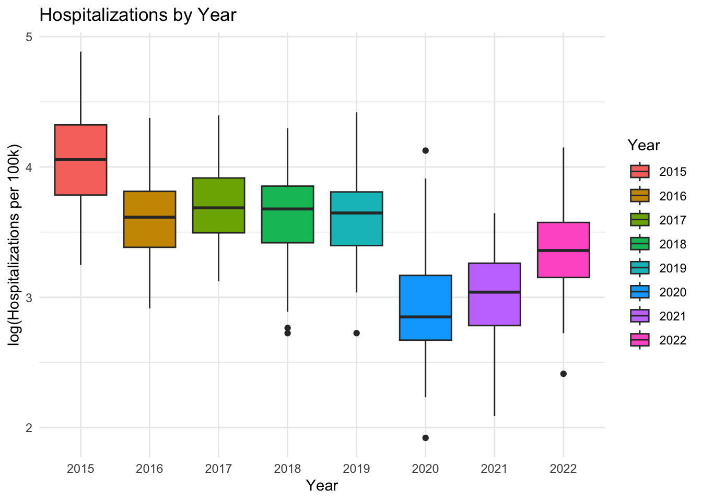
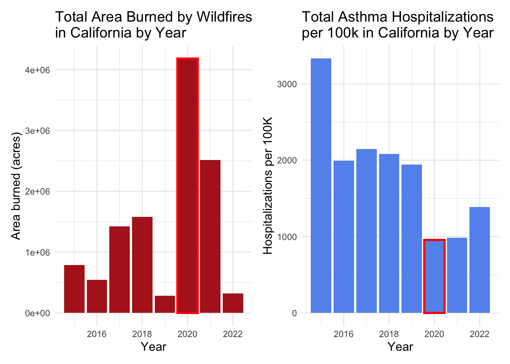

The full code for this analysis can be accessed at this repository
Introduction
Asthma affects an estimated 262 million people and is the most common chronic disease among children1. It is caused by inflammation in the small airways of the lungs that leads to wheezing, coughing, and shortness of breath. While inhaled medications can manage effectively manage symptoms, if left untreated, asthma attacks can be fatal. In fact, over 450,000 people died from asthma worldwide in 2019.
Many things can trigger asthma symptoms. One example is fine particulate matter (PM). Scientists measure PM at two scales, PM 10 and PM 2.5, where the number refers to the size of the particles in micrograms. PM 2.5 is especially concerning for people with respiratory conditions such as asthma because its small size means it can get into even the narrowest of airways, causing irritation and inflammation2.
PM 2.5 comes from many sources, from industrial pollution to car exhaust, but recent research has shown that PM 2.5 from wildfires is particularly harmful3. As wildfire regimes become more volatile under climate change, more people will likely be exposed to these harmful particles4.
While it is difficult to directly measure PM 2.5 from wildfires, one useful proxy for wildfire air pollution is air quality. The Air Quality Index (AQI) is a measure of how polluted the air is. It is calculated based on the concentrations of a number of common pollutants (Ozone, particulate matter, CO, NO2, SO2) present in the air5.
This analysis will use AQI data as a proxy for wildfire to explore how changing wildfire regimes are affecting the prevalence of asthma.
Data
I will use data from a number of sources to answer this question.
Yearly asthma hospitalization counts by county were retrieved from the California Health and Human Services (CHHS) Open Data Portal6. This data includes the number of asthma-related hospitalizations by county and year. It also provides strata by age various age groups. I filtered down to only the observations by total population, as I am interested in hospitalizations for all age groups. Additionally, data was only available from 2015-2022, so this became my time range of interest that I filtered the rest of my data to match.
Air Quality Index (AQI) data by county was retrieved from the EPA7. This data includes various assessments of AQI at a yearly scale across California counties. AQI is available at a finer temporal scale, but I chose to look at yearly AQI data from 2015-2022 to match the temporal scale of the asthma data.
Fire frequency and area burned data was retrieved from CalFire8. This is a geodatabase of all the fire perimeters and associated fire information from 1858 until 2023 in California. I filtered down to just fires between 2015 and 2022 and calculated the total area burned by year and the total number of fires burned by year. While this data did not factor into my main analysis, it was useful in understanding the larger context of the question and looking for confounding variables.
County level demographic information and geospatial data were retrieved from the United States Census Bureau9. This data contains information on population totals by county and year for California. It also has vector data on the county boundaries. This data was used to standardize the number of hospitalizations by the population size per county and to look for trends along latitude in hospitalizations. Similarly, this data was filtered to 2015-2022.
Before beginning my analysis, I cleaned the data such that I could join all my necessary information together. I divided the raw asthma hospitalization data by the population of each county, then multiplied by 100,000 to get the hospitalizations per 100,000 people. This was to account for the varying population sizes per county. I also capped the AQI value at 500 because that is the maximum standardized value listed on the EPA’s website for air quality. I converted the county boundary polygon data into coordinates to look for trends along latitude. Lastly, I used the area data and count data from CalFire to find the total acreage burned per year and total number of fires per year. This data was used to analyze trends in wildfires over time.
Analysis plan
For my analysis, I chose a multiple linear regression model. I started by running simple linear regressions with single predictors to get a sense of what variables were and were not important to my analysis. I was interested in understanding if there was a linear relationship between wildfire PM 2.5 and asthma hospitalizations. Because I couldn’t find open access data that directly quantified PM 2.5 from wildfires, I used a variety of measures of air quality from the EPA’s Air Quality Index. I tried looking at the median AQI, maximum AQI, days with PM 2.5, days with ozone, and days unhealthy for sensitive groups or worse. While these predictors were similar, median AQI had the highest R2 and smallest p-value. There are large limitations here simply because I am using a proxy for wildfire PM 2.5 and I do not know what the relationship is between the AQI data I have and the wildfire PM 2.5 data I was unable to access.
I also added demographic variables such as median per capita income and population density to see if these were important predictors of asthma hospitalizations. However, I found they were not significant.
Lastly, I incorporated spatial and temporal variables to see if those affected hospitalizations. There was no significant effect of latitude, but year was very significant. Thus, my final model looks as follows:
Multiple linear regression model:
\[log(hosp\_per\_100k) = \beta_0 + \beta_1 median\_aqi + \beta_2year2015 ... \beta_9year2022 + u_i\] Where hosp_per_100k is asthma hospitalizations per 100,000 people. This variable has been log transformed to establish a linear relationship. median_aqi is the median aqi for that year. year represents the year of interest treated as a categorical variable.
I chose to analyze year as a categorical variable because of the frequency with which the asthma data was collected. Since the asthma data is reported on a yearly basis, there is no intra-year variability in the data. Therefore, I decided to treat year as a categorical instead of a continuous numerical variable. There are 8 years of data included in my analysis, but the formula here does not list all of them for brevity.
The next step in my analysis plan was to check for autocorrelation because I was using time series data. Autocorrelation can occur in temporal and spatial data sets because data collected near each other in space and time have the potential to be more similar to each other. I used the autocorrelation function acf on the residuals from my linear model and there was no obvious autocorrelation in my data.
Results and Discussion
Model Results
Reveal code
asthma_mod <-lm(log(hosp_per_100k) ~ median_aqi +as.factor(year), data = asthma_aqi)asthma_hosp_table <-tab_model(asthma_mod,pred.labels =c("Intercept (year 2015)", "Median AQI", "2016","2017","2018","2019","2020","2021","2022"), dv.labels =c("Asthma Hospitalizations (per 100k)"),string.ci ="95% Conf. Int.",string.p ="P-value",title ="Table 1. Linear Model Results",digits =3)asthma_hosp_table
Table 1. Linear Model Results
Asthma Hospitalizations (per 100k)
Predictors
Estimates
95% Conf. Int.
P-value
Intercept (year 2015)
3.515
3.365 – 3.666
<0.001
Median AQI
0.010
0.007 – 0.012
<0.001
2016
-0.411
-0.537 – -0.286
<0.001
2017
-0.327
-0.454 – -0.201
<0.001
2018
-0.425
-0.548 – -0.301
<0.001
2019
-0.355
-0.483 – -0.228
<0.001
2020
-1.138
-1.266 – -1.009
<0.001
2021
-1.062
-1.190 – -0.933
<0.001
2022
-0.648
-0.778 – -0.519
<0.001
Observations
381
R2 / R2 adjusted
0.594 / 0.586
Note to Max: these results vary so drastically from what I presented because I had simply forgot to add year into my model. Sorry about that!
The results of the linear model show that median AQI and all years of interest had significant coefficients at the 0.05 significance level. Additionally, the adjusted R2 of 0.586 tells us that ~58.6% of the variability in hospitalizations can be explained by median aqi and year. However, if we examine the R2 values from my earlier preliminary models, we can see roughly what the breakdown of this multiple linear regression is.
[1] "R squared for median aqi as sole predictor: 0.07"
[1] "R squared for year as sole predictor: 0.51"
When we take into account all three R2 values together, we can see that roughly 7% of the variation in the complete model comes from median AQI, and roughly 51% of the variation from year.
Model visualization
Next, we can plot the parts of our linear model results to see how well our predicted line fits our data.
Reveal code
ggplot(asthma_aqi, aes(median_aqi, log(hosp_per_100k))) +geom_point() +geom_smooth(method ="lm",se=FALSE,color="red") +labs(title="Hospitalizations and Median AQI",x="Median AQI",y="log(Hospitalizations per 100k)") +theme_minimal()

This graph shows how hospitalizations are changing with median AQI through time. There is a weak, positive, linear relationship between median AQI and hospitalizations with no obvious outliers. We can also see our line of best fit. The residuals for this particular model were evenly distributed and showed no trend.
We can also visualize how hospitalizations are changing with time.
Reveal code
ggplot(asthma_aqi, aes(as.factor(year), log(hosp_per_100k))) +geom_boxplot(aes(fill=as.factor(year))) +theme_minimal() +labs(title="Hospitalizations by Year",x="Year",y="log(Hospitalizations per 100k)",fill="Year")

This graph shows the boxplot of hospitalizations by year. While we cannot plot our best fit line onto this graph, we can see that hospitalizations seem to be decreasing with time. This tracks with our estimated coefficients from our above multiple regression model. Every coefficient for year after the reference level of 2015 is negative, showing how hospitalizations are decreasing in magnitude relative to 2015.
Conclusions and next steps
Overall, these results only provide very weak evidence that there is a relationship between wildfires and respiratory health. While the results of my model were significant, there were many limitations in the data I was using that could be affecting my results. For example, a large limitation of this analysis was the lack of finer temporal scale data for asthma-related hospitalizations. All of the other datasets I was using had data available at the daily and sometimes even hourly time scale. Because I had to aggregate data about AQI to such a broad time scale, much of the variation in AQI across seasons is lost. There are certain asthma triggers that are seasonal, such as pollen in the spring or cold air in the winter. Being able to track how month-to-month seasonality is affecting hospitalizations would be a great next step.
Another limitation was that I was unable to find any open-source data on PM 2.5 directly from wildfires. This meant I was unable to examine a direct relationship between wildfire and asthma hospitalizations, I could only use AQI as a proxy. There certainly is data on wildfire PM 2.5, and if given more time, I would reach out to the data owners and authors of papers who have published scholarship on this topic to try and request access to the data.
Lastly, this analysis contained many omitted variables that might be influencing trends in asthma hospitalizations over time.
For example:
Fires and hospitalizations over time
# Plot change in area burned over timefire_plot <-ggplot(fire_asthma, aes(year, total_area)) +geom_col(fill="firebrick") +geom_col(data = . %>%filter(year ==2020),color="red",fill="firebrick",lwd=1) +labs(title="Total Area Burned by Wildfires\nin California by Year",x="Year",y="Area burned (acres)") +theme_minimal() +theme(axis.title =element_text(size=12),title =element_text(size=12))# Plot change in hospitalizations over timehosp_plot <-ggplot(fire_asthma, aes(year, total_hosp_capita)) +geom_col(fill="cornflowerblue") +geom_col(data = . %>%filter(year ==2020),color="red",fill="cornflowerblue",lwd=1) +labs(title="Total Asthma Hospitalizations\nper 100k in California by Year",x="Year",y="Hospitalizations per 100K") +theme_minimal() +theme(axis.title =element_text(size=12),title =element_text(size=12))fire_plot | hosp_plot

This plot shows the total area burned by wildfires in California from 2015 to 2022, and the total number of asthma hospitalizations per 100k people in California from 2015-2022. The year 2020 in particular stands out. Despite it being a record year for the amount of area burned in the state, it was also the year with the fewest hospitalizations. An obvious factor that is likely influencing this is COVID-19. The shelter-in-place mandates likely greatly influenced people who were seeking out asthma care, even if there were more wildfires that year.
This is just one example of an important cause of variation in asthma hospitalizations that I was unable to capture in my model. Going forward, I would like to have access to much more comprehensive data to truly unpack the connection between wildfires and respiratory health.
World Health Organization: WHO, World Health Organization: WHO. Asthma. 6 May 2024. Available: https://www.who.int/news-room/fact-sheets/detail/asthma↩︎
Health studies of criteria air pollutants. In: California Office of Environmental Health Hazard Assessment [Internet]. [cited 12 Dec 2024]. Available: https://oehha.ca.gov/air/health-studies-criteria-air-pollutants↩︎
Aguilera, R., Corringham, T., Gershunov, A. et al. Wildfire smoke impacts respiratory health more than fine particles from other sources: observational evidence from Southern California. Nat Commun 12, 1493 (2021). https://doi.org/10.1038/s41467-021-21708-0↩︎
D. Kiser et al., “Particulate matter and emergency visits for asthma: a time-series study of their association in the presence and absence of wildfire smoke in Reno, Nevada, 2013–2018,” Environ. Health, vol. 19, no. 1, p. 92, Aug. 2020, doi: 10.1186/s12940-020-00646-2.↩︎
Technical assistance document for the reporting of daily air quality – the Air Quality Index (AQI). United States Environmental Protection Agency. 2024 May. Report No.: EPA-454/B-24-002. Available: https://document.airnow.gov/technical-assistance-document-for-the-reporting-of-daily-air-quailty.pdf↩︎
“Asthma Emergency Department Visit Rates by County - California Health and Human Services Open Data Portal,” CHHS Open Data. https://data.ca.gov/dataset/asthma-emergency-department-visit-rates (accessed Dec. 02, 2023).↩︎
US Environmental Protection Agency. Air Quality System Data Mart AirNow available via https://www.epa.gov/outdoor-air-quality-data. Accessed December 8 2024.↩︎
California Department of Forestry and Fire Protection (CAL FIRE), [calfire_all.gdb], [2024-11-17], retrieved from CAL FIRE data portal. Accessed December 8 2024.↩︎
United States Census Bureau. County Population Totals: 2010-2019, 2020-2023. https://www.census.gov/data/datasets/time-series/demo/popest/2010s-counties-total.html#par_textimage_70769902. Accessed December 8 2024.↩︎
Citation
BibTeX citation:
@online{oyler2024,
author = {Oyler, Haylee},
title = {Wildfires and {Respiratory} {Health} in {California}},
date = {2024-12-13},
url = {https://haylee360.github.io/posts/2024-12-13-asthma-aqi/},
langid = {en}
}